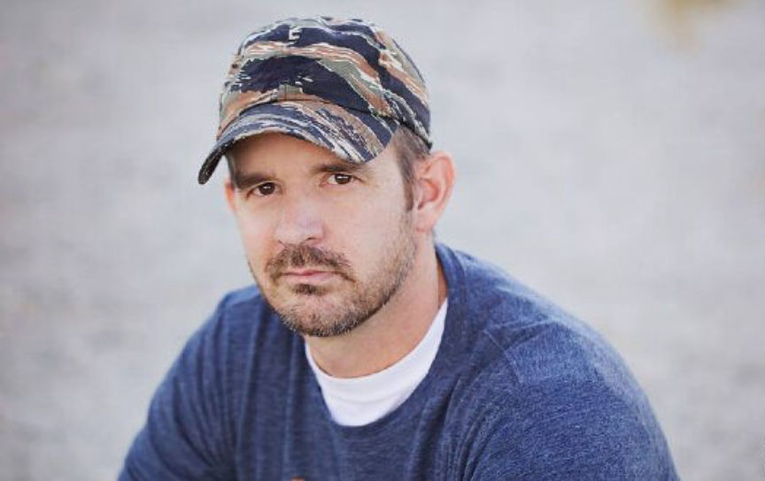
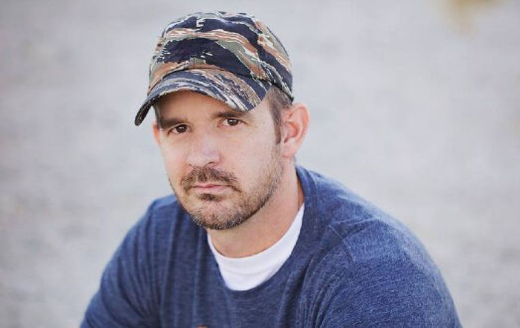

Former Navy SEAL Sentenced for Producing Child Pornography
A Los Angeles man was sentenced to federal prison after he was convicted of producing child sexual abuse material.

Robert Quido Stella, 51, a former Navy SEAL used hidden cameras to film his victims. Stella also accessed a dark web child pornography site named "365 CP."
Stella's conviction resulted from investigations launched by Homeland Security Investigations (HSI) in 2021. The HSI received information from the Federal Criminal Police Office of Germany (BKA), which had been investigating 365 CP.
Investigations by the HSI revealed that a Coinbase account had been used to pay for access to 365 CP on July 13, 2020. The account had sent $18.58 in Bitcoin to an address associated with the child abuse site.
Information acquired from Coinbase revealed that the account that had made the payment belonged to Stella. The investigators executed a search warrant at Stella's residence on July 15, 2021.
The search resulted in the discovery of numerous pieces of covert surveillance equipment, including a secret camera in the bedroom of Stella's daughter, hidden inside a smoke detector.
The investigators also found collections of child sexual abuse material on Stella’s computer and two external hard drives. They included approximately 17 videos and hundreds of screenshots. Stella had attempted to hide the child abuse material through the use of multi-level folder structures with titles such as "coursework."
On being questioned, Stella admitted he had accessed 365 CP. On July 27, 2021, a federal grand jury filed an indictment that charged Stella with three counts of production of child pornography, one count of access with intent to view child pornography for logging on to the child pornography dark web site, and two counts of possession of child pornography.
In April 2023, Stella pleaded guilty to access with intent to view child pornography and two counts of possession of child pornography. A jury, however, found him guilty of three counts of production of child pornography following a four-day trial in May 2023.
United States District Judge George H. Wu sentenced Stella to 20 years in prison on February 8, 2024.

Robert Quido Stella
Robert Quido Stella, 51, a former Navy SEAL used hidden cameras to film his victims. Stella also accessed a dark web child pornography site named "365 CP."
Stella's conviction resulted from investigations launched by Homeland Security Investigations (HSI) in 2021. The HSI received information from the Federal Criminal Police Office of Germany (BKA), which had been investigating 365 CP.
Investigations by the HSI revealed that a Coinbase account had been used to pay for access to 365 CP on July 13, 2020. The account had sent $18.58 in Bitcoin to an address associated with the child abuse site.
Information acquired from Coinbase revealed that the account that had made the payment belonged to Stella. The investigators executed a search warrant at Stella's residence on July 15, 2021.
The search resulted in the discovery of numerous pieces of covert surveillance equipment, including a secret camera in the bedroom of Stella's daughter, hidden inside a smoke detector.
The investigators also found collections of child sexual abuse material on Stella’s computer and two external hard drives. They included approximately 17 videos and hundreds of screenshots. Stella had attempted to hide the child abuse material through the use of multi-level folder structures with titles such as "coursework."
On being questioned, Stella admitted he had accessed 365 CP. On July 27, 2021, a federal grand jury filed an indictment that charged Stella with three counts of production of child pornography, one count of access with intent to view child pornography for logging on to the child pornography dark web site, and two counts of possession of child pornography.
In April 2023, Stella pleaded guilty to access with intent to view child pornography and two counts of possession of child pornography. A jury, however, found him guilty of three counts of production of child pornography following a four-day trial in May 2023.
United States District Judge George H. Wu sentenced Stella to 20 years in prison on February 8, 2024.